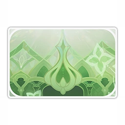

Нахида
 Малую властительницу Кусанали, что едва ли покидает стены Храма Сурастаны, почти никогда не упоминают и не принимают всерьёз.
Она несет тяжёлое бремя и никогда не останавливается, даже если кругом кромешная тьма и одиночество.
Малую властительницу Кусанали, что едва ли покидает стены Храма Сурастаны, почти никогда не упоминают и не принимают всерьёз.
Она несет тяжёлое бремя и никогда не останавливается, даже если кругом кромешная тьма и одиночество.
Регион: Сумеру
Стихия: Дендро
Оружие: катализатор
Созвездие: Госпожа Мудрости
Созвездие персонажа
Выпадение персонажа
Карточка персонажа
О персонаже:
Давным-давно Дендро Архонт создала тропический лес и через Академию даровала мудрость народу Сумеру. Хотя она давно покинула этот мир, легенды о её подвигах и по сей день передаются из уст в уста. В глазах людей присутствие Дендро Архонта является символическим и означает, что эта земля с незапамятных времён находится под божественной защитой. Мудрецы города поклоняются ей с величайшей преданностью, и люди последовали их примеру без малейших колебаний. А Акаша стала ушами и глазами малой властительницы Кусанали. С помощью этой мощной системы малая властительница может переживать радости и горести, с которыми сталкивается её народ. Она видит всё и способна слышать даже те речи, которые выходят за рамки лести. Чем больше она узнаёт, тем яснее понимает, что должна быстрее учиться и развиваться, ведь только так она сможет противостоять угрозам, исходящим из глубин мира. Именно в этом заключается её неизбежная миссия. Хотя есть и те, кто недоволен нынешней ситуацией, Нахида остаётся непоколебимой. Её упорство проистекает из убеждённости, ведь она лучше других знает, что должна быть поддержкой и опорой для всех.
История 1(ур др 2):
Процесс обучения и развития приносит радость, а знания об этом мире всегда способны утолить буйное любопытство Нахиды. Постепенно Нахида постигла принципы природы и стихий и поняла экологию неба и моря. Она даже может сочетать полученные знания и создавать прекрасные сны, которые следуют разуму и в то же время выходят за рамки логики. Эти сны, по сути, подобны чудесным метафорам Нахиды - все они приводят к пониманию сходства между вещами, которые никоим образом не связаны друг с другом. Но бывают моменты, когда она размышляет о чём-то, что обычно касается событий, связанных с людьми или обществом. Например, о том, что некоторые люди выбирают молчание и ложь, когда признание и правда могут освободить их от наказания, а другие часто ранят жестокими словами тех, кто искренне любят. Возникает ощущение, что противоречия всего мира сосредоточены и проявляются в людях, чьи легко меняющиеся эмоции вызывают у Нахиды недоумение. В такие моменты её метафоры не работают, а сама она не может найти ни одной хаотической системы, которую можно использовать в качестве эталона в этом мире. Она может объяснить это только тем, что каждый человек уникален, поэтому люди демонстрируют различные реакции, когда испытывают схожие эмоции. Но такой ответ не устраивает Нахиду. Людей невозможно понять при помощи одних лишь знаний и догм. Возможно, именно в такие моменты к Нахиде приходит понимание того, почему ████ непоколебимо стояла на стороне людей и пошла ради них на огромные жертвы. Потому что каждый из них уникален в своём роде.
История 2(ур др 3):
Жизнь Нахиды однообразна, но ей принадлежат самые фантастические и живые сны во всём Сумеру. Знания, которые она получает через Акашу в течение дня, ярко проявляются в её снах ночью. По мере того как она приобретает всё больше знаний, её сны становятся ещё более продуманными и полными жизни. Сны не только позволяют её разуму отдохнуть, но и дают ей возможность проверить свои новые знания на предмет того, не противоречат ли они здравому смыслу и не упущена ли какая-нибудь деталь. Когда сумеречные птицы впервые появились во сне Нахиды, они парили в небе стоя, а крылья их были сложены. Зрелище было настолько необычным, что сразу привлекло внимание Нахиды. После этого она узнала, как устроены крылья, и сумеречные птицы смогли свободно летать в её снах. Затем она применила аналогичные методы, чтобы исправить спящих под водой грибосвинов, растущий на яблоне редис и кристальных бабочек с нехарактерным для них цветом крыльев. Знания можно использовать не только для рационального объяснения всего на свете, но и для детской забавы. Строго говоря, грибосвин может ходить только по земле, но теперь, когда мы знаем, как работают крылья, разве грибосвин с крыльями не может летать в небе? Если грибосвины могут летать, то крокодилы могут ходить на задних ногах, а фрукты харра могут разговаривать... То, как Нахида развивает свою систему знаний, впоследствии позволило ей создать маленький уединённый рай. В своих снах она невероятно счастлива.
История 3(ур др 4):
Дети не обладают обширными знаниями и легко поддаются эмоциям, но это не значит, что их можно не уважать или издеваться над ними. Разочарование и потери, конечно, могут дать им почувствовать вкус реальности, но они также могут лишить их невинных мыслей и пламенных эмоций. Дети, которым не посчастливилось испытать негатив, часто слышат нежный голос посреди ночи. Она внимательно слушает детей, использует свои замечательные метафоры, чтобы пояснить свои рассуждения, играет с ними, рассказывает об их любимых играх и закусках... И так до самого рассвета. Пусть такое общение длится всего одну ночь, но дети верят, что в мире ещё есть люди, способные их понять. Тепло их сердец растопит ненависть и злобу. Таким образом, дети получат возможность изменить свою жизнь, стать уверенными и счастливыми. Однако никто из них не знал, кому принадлежит этот мягкий, тёплый голос. Сила Дендро Архонта велика, но у неё наверняка есть дела поважнее. Дети собрались в тишине, чтобы обсудить это удивительное явление. Они обсудили множество теорий и попытались представить огромное количество вещей. В итоге они пришли к выводу, если кто и способен на такое, то это не кто иная, как малая властительница Кусанали. Точнее было бы сказать, что они готовы поверить только в это объяснение. Вскоре они приняли эту теорию. Разумеется, никто из родителей им не поверил. Но какое это имеет значение? Малая властительница Кусанали уже стала их подругой.
История 4(ур др 5):
Сотрудники отдела озеленения города Сумеру однажды получили таинственное письмо за подписью «Неравнодушного жителя города Сумеру». В письме содержались подробные предложения и тщательно продуманный план с учётом погодных условий и множества других факторов. Судя по профессионализму, с которым оно было написано, естественно было предположить, что письмо принадлежало известному исследователю Амурты, который пожелал остаться неизвестным. Несмотря на то, что автор письма предпочёл не называть себя, сотрудники отдела спланировали озеленение города Сумеру в точном соответствии с указаниями в письме, будто они выполняли приказ своего начальника. Результат был высоко оценён. Однажды, когда Нахида позаимствовала тело Катерины, чтобы прогуляться по улицам города Сумеру, к своему великому изумлению, она обнаружила, что расположение растений было именно таким, как она предлагала в своём плане. Божества в своём величии не должны вмешиваться в дела людей. После долгих раздумий, хотя ей казалось, что это не принесёт пользы, она решила отправить письмо анонимно. В результате, успех её первой попытки применить знания на практике был настолько воодушевляющим, что, когда она шла по улицам города, казалось, будто она вот-вот воспарит в небеса. Но, когда она дошла до угла, то вдруг заметила, что несколько совершенно не сочетающихся по цвету цветков были посажены вместе. Она тщательно перепроверила план и обнаружила, что не учла возможность изменения цвета одного из цветков и не указала строгие условия его выращивания. Затем она подумала, что эти цветы могли находиться здесь уже несколько дней, в течение которых все были свидетелями отсутствия у неё чувства прекрасного... В тот день многие утверждали, что видели, как малая властительница Кусанали сидит на корточках возле цветов и прикрывает руками покрасневшее от стыда лицо. Просто многие не могли поверить в это.
История 5(ур др 6):
Что нужно сделать, чтобы полностью устранить угрозу запретного знания для Ирминсуля? Нахида привыкла считать, что только она знает ответ, но она даже не подозревала, что сама является ответом. Тот, кто предпринимает действия, непременно оставляет после себя след. Когда кто-то хочет искоренить самого себя, возникает парадокс. Поэтому для достижения этой цели она должна заручиться поддержкой. Когда Нахида поняла это, время стремительно ускользало, не оставляя ей места для дальнейших размышлений. Даже накопленные годами знания не могли помочь ей найти решение насущной дилеммы. Но, как говорит ████, мудрый человек должен быть счастлив, получив ответ. Она родилась не только для того, чтобы совершать жестокие поступки. Только когда запретное знание будет полностью уничтожено она может сосредоточиться на будущем Сумеру и планировать присущие ему процветание и счастье. Будет ли народ, идущий в будущее, помнить имя, которого больше не существует? Это уже не имеет значения. «Разве это уже не имеет значения?» Нахида наверняка высказала бы другое мнение. Жаль, что времени осталось слишком мало. В мгновение ока они оказались рядом, и у неё не было ни малейшего шанса ответить ████.
Ящик для игрушек Нахиды
Хотя внешне он ничем не отличается от обычного ящика для игрушек, в нём хранится множество экспериментальных моделей. Нахида проявляет большой интерес к разного рода популярным играм. У них простые правила, но при этом они увлекательны и глубоки. Будь то головоломки или боевые игры, они способны надолго увлечь игроков. Игры просты, но не легки, что свидетельствует о мудрости разработчиков. Они также дают прекрасную возможность учиться, деконструируя и реконструируя природу. Вместо того чтобы покупать готовые игрушки на базаре, она решила, что лучше делать их с нуля, чтобы глубже понять их суть. Поэтому она быстро нашла древесину и инструменты. Следуя инструкциям Акаши и используя своё воображение, она сумела создать различные игрушки, такие как боевые игры, головоломки, многомерные замки... Нахида на миг испытывала удовольствие каждый раз, когда заканчивала очередную игрушку, но вскоре она обнаружила проблему. Для боевых игр она не могла найти подходящего противника, а для головоломок она уже знала решение, потому что сама их создала. «Если бы только было кому опробовать их!» Она всегда надеется на это. Но пока не появился подходящий человек, эти игрушки останутся в ящике для игрушек.
Глаз Бога(ур др 6):
Существование Акаши - это подход, а не цель. Момент, когда запретное знание будет искоренено, станет моментом, когда Акаша выполнит свою миссию. Тот, кто жаждал силы Сердца Бога, устроил это представление и сделал свой ход. Нахида использовала Сердце Бога другой страны в своих интересах и лишила хитрого врага «фрагмента» в качестве страховки. Но враг тут же предложил сделку в обмен на ключевое знание о «правде» этого мира. Он не сомневался в ценностях, укоренившихся на этой земле, и поэтому с самого начала намеревался воспользоваться любознательностью и чувством ответственности Нахиды. С его точки зрения, лучше всего торговаться за знания. Держа в руке Сердце Бога, Нахида колебалась. Она знала о Сердце Бога едва ли больше, чем о «правде» об этом мире. Сердце Бога не что иное, как ядро, в котором собрано огромное количество элементальной силы и которое она может использовать по своему усмотрению. Если за Сердцем Бога больше ничего не стоит, почему же божество так стремится собрать все Сердца Бога? Рукопожатие при заключении сделки означает равные компромиссы с обеих сторон, что далеко от победы. В то время как отказ от сделки указывает на определённый тип невежества, который, очевидно, повлечёт за собой потерю контроля. Божество мудрости мгновенно нашло ответ...